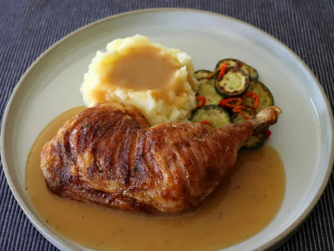

Tiger Chicken Recipe

This tiger chicken technique is the best way to roast chicken leg quarters,
a very popular cut of chicken. The skin is crispy and the meat comes out tender,
succulent, and beautifully seasoned. Along with the fastest, best,
tastiest pan sauce ever, you are in for an exceptional bite of chicken.
Ingredients
- 1 1/2 teaspoons kosher salt
- 1/2 teaspoon freshly ground black pepper
- 1/2 teaspoon garlic powder
- 1/4 teaspoon chipotle chili powder
- 1/4 teaspoon baking soda
Chicken and Pan Sauce
- 4 chicken leg quarters, with skin
- 2 tablespoons all-purpose flour
- 1 1/3 cups chicken bone broth, or as needed
- salt and freshly ground black pepper to taste
- 1 pinch cayenne
- 1 sprig any fresh herb (optional)
Directions
- For seasoning salt, combine salt, black pepper, garlic powder, chipotle chili powder,
and baking soda in a small bowl. Stir together thoroughly, and set aside.
- For tiger cut chicken, lay a leg quarter, skin side up, on a cutting board. With a sharp knife, begin halfway up the chicken leg,
and make cuts through the skin to the bone,every 1/4 -inch. Make these parallel cuts all the way to the end of the thigh.
Repeat with remaining leg quarters.
- Line a baking sheet with parchment paper, and place the chicken, skin side down, on the prepared baking sheet.
Sprinkle surface with 1/2 of the seasoning salt. Turn legs over and sprinkle the remaining seasoning salt on the skin side,
distributing it evenly over the entire surface.
- Refrigerate chicken legs on the baking sheet, uncovered, to dry out overnight.
- Preheat the oven to 450 degrees F (235 degrees C). Set a rack in the upper center of the oven.
Home